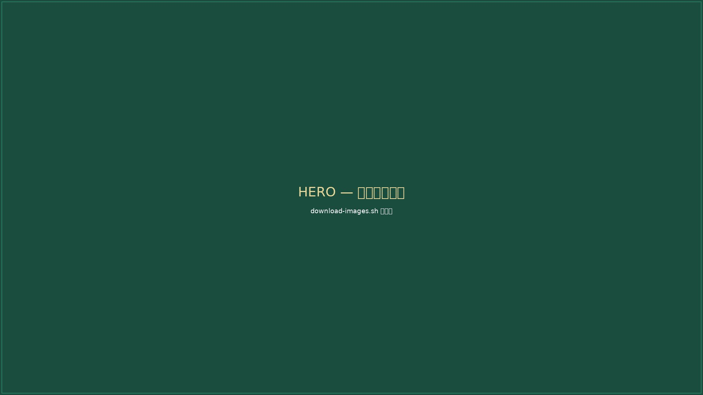

Pillar III — Wildlife Conservation
絶滅危惧種・希少種の保護と啓発活動
Wildlife Conservation
国立公園・国定公園及びバッファゾーンを含むエリアに棲息する絶滅危惧種・希少種等の野生生物やその生態系の保護・保全を目指します。
対象となる野生生物は、哺乳類、鳥類、両生類、爬虫類、昆虫など多岐にわたります。啓発を行うフォーラムの開催や情報発信、出版事業を展開するとともに、ブランド事業による収益を保護活動に還元する仕組みを構築しています。
【National Park Style】および【Save The RED LIST】のブランド商品の販売やライセンス展開を行っています。これらの活動によって得られる収益を野生生物保護団体に寄付することで、保護活動を持続的に支援しています。
Track Record
環境省後援による絶滅危惧種保護啓発プロジェクト
| 2017年7月〜11月 | Save the RED LIST Projectを立ち上げ。啓発フォーラムおよび展示イベントを須磨水族館、東京大学本郷キャンパス、北海道幌加内町等で実施。 |
| 2017年7月 | 【Save The RED LIST Project】アマミノクロウサギ保護啓発ムービーをJCF学生映画祭とコラボし、学生映画監督の長尾淳史監督が制作・発表。 映像はこちら → |
| 2024年3月 | Save The RED LIST Project「ネコのフォーラム」を、第17回JCF学生映画祭in奄美大島＆与路島の世界自然遺産登録地開催特別記念プログラムとして開催。 リーフレットはこちら → |